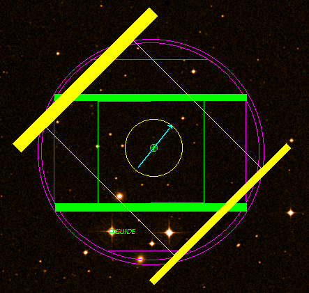

Main image
window - Cassegrain

[Purple] - Crosshead limits - These are approximate; be conservative when choosing guide stars near the edges of this circle. The radius of the circle is about 120 arcseconds. You should also stay closer to the centre than the vertical and horizontal purple lines near the edges. Programme validation will do a basic check of your position (e.g. whether it is completly outside the circle) but it is up to you to choose something sensible. If the TSS does not see anything at your selected position, they will try to find an alternative star; any time spent doing this will be charged to your project.
[Green] - Dichroic edges - Again approximate; stay away from the thick green lines (these are the edges of the glass surface, seen at 45 degrees inclination), and the thin green lines (these are the edges of the dichroic coating on the glass).
[Green] - base position - In this example, a hard to see circled cross, down in the centre.
[Green] - Guide star position. Click on a star to select. You need the "GUIDE etc." button pressed to be able to see your selection (see the table above).
[Cyan] - science field - in this case, the 90-arcsecond CGS4 slit, oriented east-west.
[Yellow] - (i) IRPOL vignetting and (ii) science target offset locations (see below)
Notes on guide-star brightness limits are in the main preparation document.

[Blue] - offset positions of the guide star (see plot to the left). To display both the science target offset positions and guide star offset positions, click on the offset iterator in your science programme.